Level Design Work

Here is a recap of some of the level design work I've done on my game Fateful Fragments:
Tools and Technologies Used:
First Map
I needed a forest map design that would be a location that wolves could believably exist in. I had prototype npc wolves and a boss already created, so I needed an environment to match their theme and to compliment my action RPG game. So I began to gather references to use as inspiration for my design.
Here's What I Gathered:
blockout inspiration 1


blockout inspiration 2


After taking a few days to decide on which map style I liked best, I decided to go with the 2nd style of map. Specifically my main inspiration was the last picture above this text. I had a clear picture of what I wanted in my head: A linear path with multiple enemies on it, and a split off path that required some light platforming elements and less enemies. Both of these paths eventually meeting at some 'point of interest' where the player will find the boss to fight. With this picture in my head and references in-hand, I got to work.
Here's What I Made:
Blockout 1
Hopefully you can see that idea come to life here, as we have a large blockout of a woodland area, lots of trees, and two branching paths for the player to travel. Points of interest are a waterfall, a center island, and a red 'temple' at the intersection of the two paths which leads to the boss arena.

After some play-testing, the map seemed simple and fun, so I stuck with it and decided to begin my passes, adding in more permanent environmental props to replace the grey blocks.

Here is the up-close final result after many more passes adding things such as grass, fog, foam lines for the waterfall, falling tree leave particle systems, and much more.
 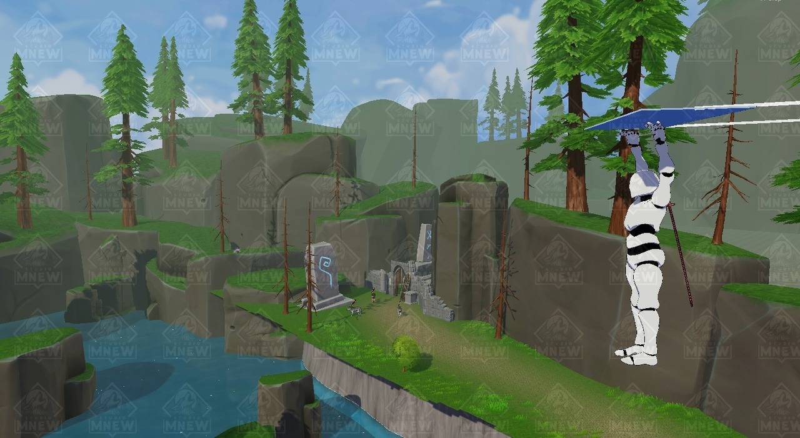
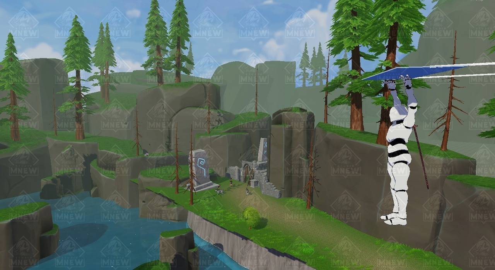
Overall the experience was very fun, as this was my first time really doing my own level design. I think the map looks great, and the performance is currently sitting at ~150fps on the low end at high graphical settings. On top of all that, my skills as a designer have grown and I can't wait to design more levels!


Second Map
I needed a japanese rooftop type of map design that would be a location that a katana wielding boss could believably exist in. Again I had prototype npc's and a boss already created, so I needed an environment to match their theme. So I gathered references to use as inspiration for my design.
Here's What I Gathered:


I was trying to get something that drew inspiration from Japanese symbols such as the Torii gate, and traditional buildings of Japan you would see in an anime. I pictured the player running across a rooftop fighting against fast-attacking katana minor enemies, eventually leading to a large building like a dojo that would house the final boss fight arena. So I got to work...
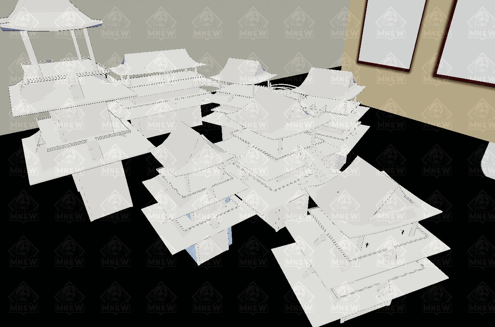 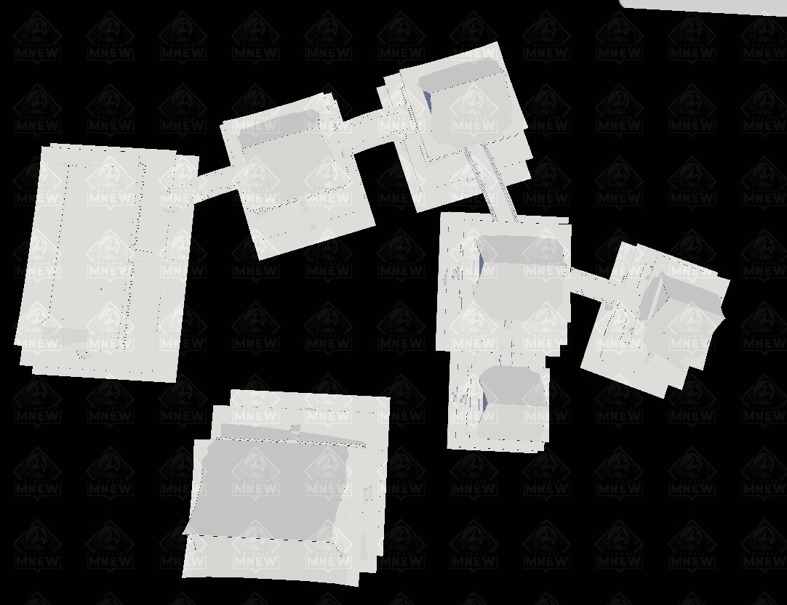Here is the overview of the map with my thoughts and locations of collectable items to reward exploration:
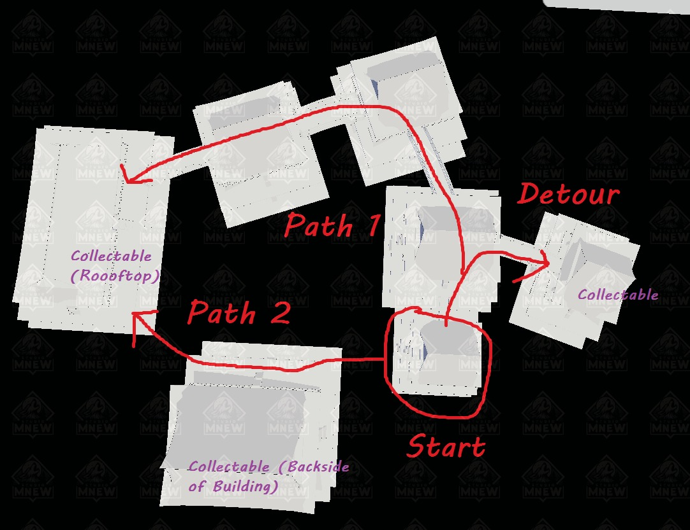You can see I wanted to cater to three different types of players: The casuals that would just take path 1 and head for the boss, The explorer seeking treasures hidden in the map, and the speedrunner who will skip the map and go straight for the boss.
Here are the props used:
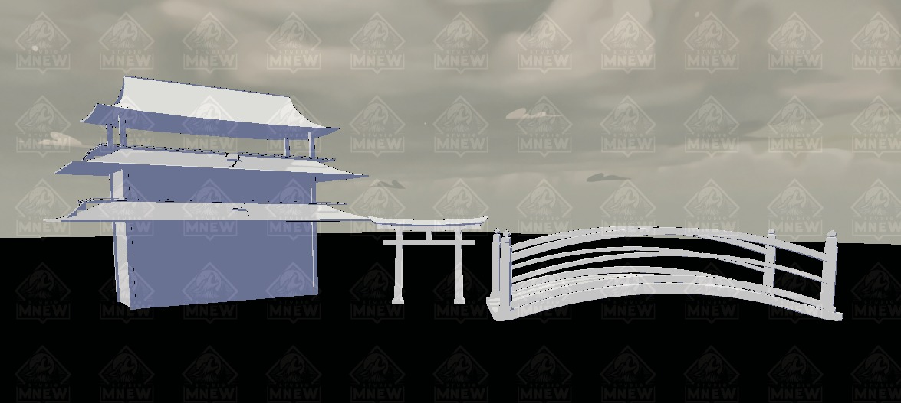Here are the screenshots of the map implemented:
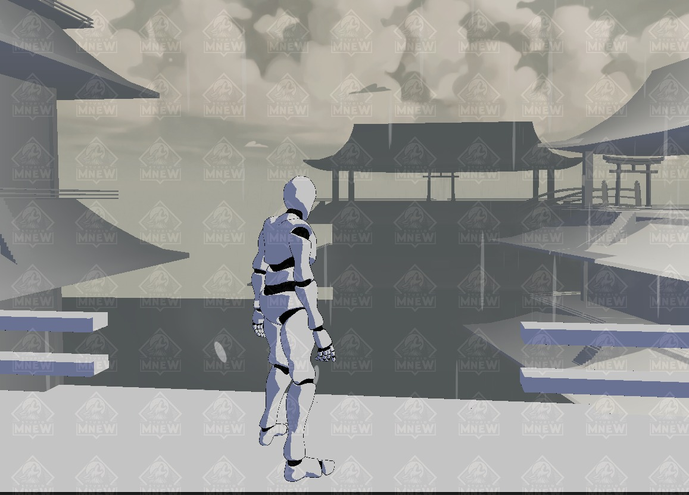 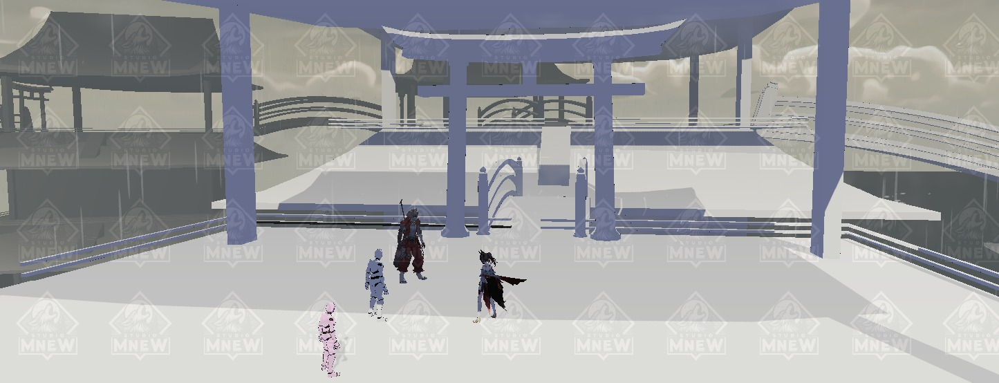 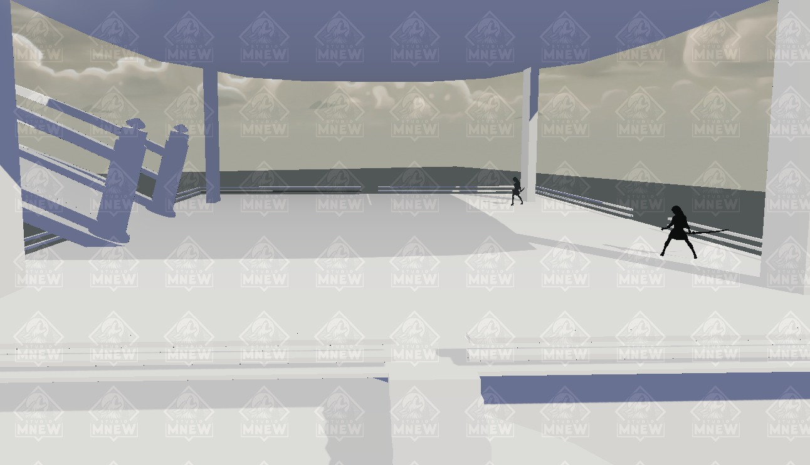 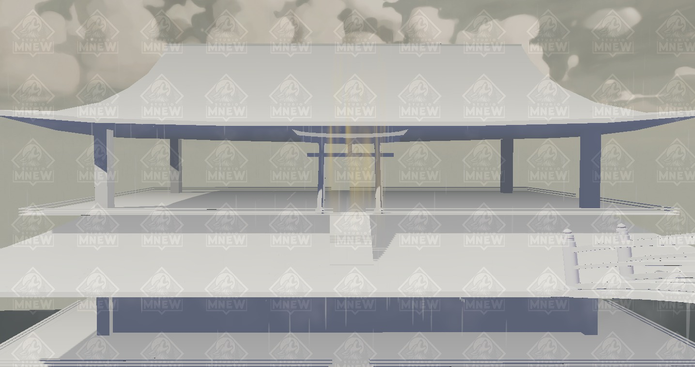 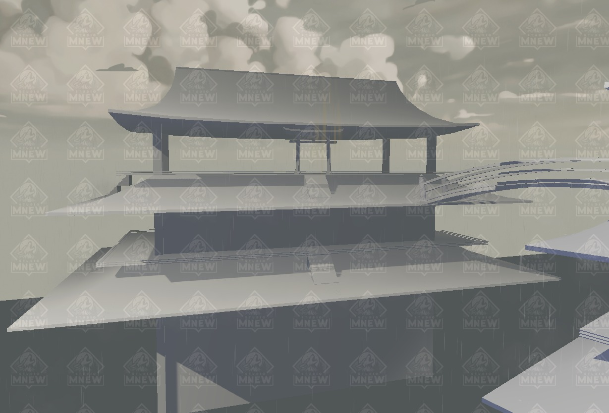After adding in the rain, fog, and spawn triggers, the map was ready to go! I really enjoyed making this one and I'm happy with how it turned out.
Third Map
I needed a fresh idea that was very flexible for any enemy type. I had re-watched some lord of the rings scenes and took some inspiration from them with an idea of a cliffside castle. With that idea in mind, I set out working on a block out. Here's what it looked like:
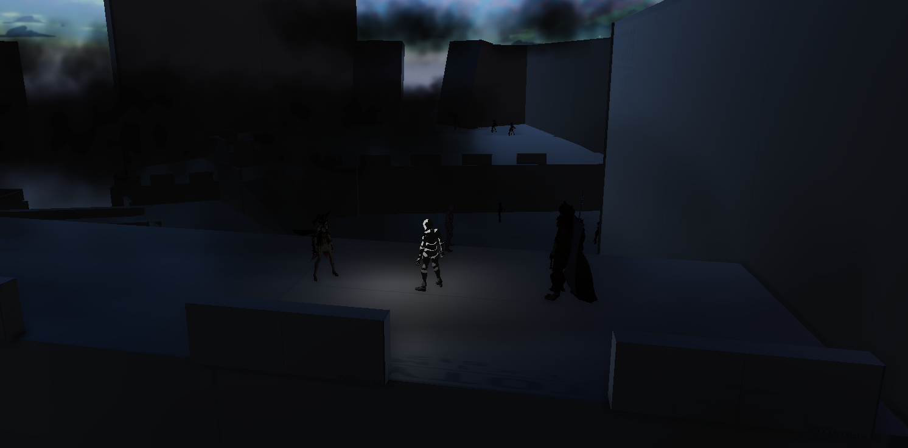I combined the castle theme of the helms deep fight with the spaciousness of halo 3's map called 'The Ark' which is essentially a large and open outdoor area. You can also see I took the 'destroyed door' idea from my first map that I implemented. You can also see I've placed lots of fog particle systems that I supplemented with real fog later on.
Here are some shots of the map with global lighting turned on and fog turned off/down:


You can see the large courtyard area and steep dropoff that the player can choose to navigate via a bridge or using their glider. There are also corners to hide collectables in.


Here are some shots with the correct lighting and fog enabled!


The pictures dont do the map justice much, but its a thriller with the player having to watch their back and check every corner for enemies that blend into the environment! It's shadowy and dark until the sparks fly!